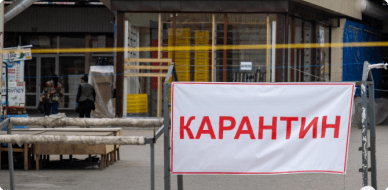
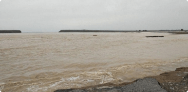

Мирзиёев рассказал, зачем было построено Сардобинское водохранилище
- 
Карантин в Узбекистане продлен до 1 июня
- 
Обмелевшая Сардоба: стихия или человеческий фактор?
Следствие проверяет четыре версии прорыва Сардобинской плотины
Выявлено еще 7 случаев коронавируса
Итоги второго месяца карантина